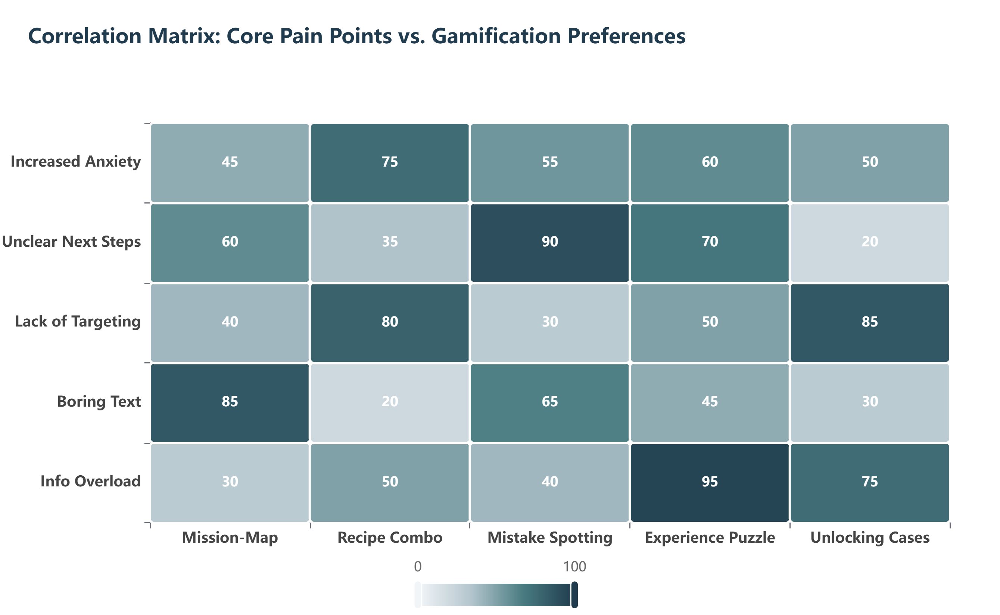

Questionnaire Evidence
Pain Points and Gamification Preferences
The questionnaire results show that students' planning problems are not uniform. Different pain points are associated with different types of gamified support. The correlation matrix compares five core pain points with five preferred gamification mechanisms. Higher scores indicate a stronger match between a user problem and a potential design response.
For increased anxiety, Recipe Combo received the strongest score, suggesting that students prefer structured, step-by-step guidance when they feel emotionally overwhelmed. This supports our decision to design planning tasks as progressive combinations rather than isolated information pages.
For unclear next steps, Mistake Spotting achieved the highest score. This indicates that students do not only want encouragement; they also need concrete feedback on what might go wrong in their planning process. Therefore, the system should include interactive error-checking or feedback tasks that help students recognise common application mistakes.
For lack of targeting, Unlocking Cases scored highly. This suggests that students want to see realistic examples and reference cases, rather than generic advice. This finding supports the inclusion of real-case unlocking mechanics, where users can access cases related to their academic stage, target region, or application goal.
For boring text and information overload, Mission-Map and Experience Puzzle received strong responses. This confirms that students need large amounts of information to be reorganised into visual, interactive, and task-based forms. As a result, the system should avoid presenting postgraduate planning as long static text and instead transform it into a navigable journey.